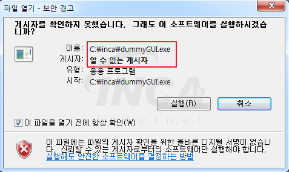

정보보호전문가 지망
네트워크
서버
사전적인 정의: 클라이언트에게 네트워크를 통해 정보나 서비스를 제공하는 컴퓨터 시스템으로 컴퓨터 프로그램 또는 장치를 의미한다.
풀어 쓴 정의: 평소에 게임을 하는 사람이라면 “서버”라는 용어가 익숙할 것이다. 게임을 하려고 하는데 게임이 접속이 안될때, 많은 경우 서버가 터진 것이 원인이다.
그래서 이 서버라는게 무엇일까? 일단 서버는 기본적으로 컴퓨터다. 근데 용도가 평소에 우리가 사용하는 컴퓨터와 조금 다르다. 우리는 보통 컴퓨터를 사용해서 웹사이트에 접속하고 게임을 하고 검색을 한다. 그렇다면 웹사이트를 제공하고 게임창을 띄우고 검색결과를 알려주는 것은 누가 하는걸까? 바로 서버(server)가 한다. server을 직역하면 제공자라는 뜻인데, 말 그대로 서버는 우리가 필요로 하는 정보를 제공해주는 역할의 컴퓨터이다.
예를 들어 우리가 컴퓨터로 google.com에 접속하면 컴퓨터는 구글 회사 소유의 서버에 검색창을 띄워달라는 요청를 보낸다. 그 요청을 받은 구글의 서버는 검색창에 관련된 정보를 컴퓨터에 보낸다. 그러면 그 컴퓨터는 검색창을 화면에 출력하여 우리가 볼 수 있게 한다.DNS
사전적인 정의: 도메인 이름과 IP 주소를 서로 변환해주는 시스템이다.
풀어 쓴 정의: 일단 이 개념을 설명하려면 IP를 알아야 하니 먼저 읽고 오는 것을 추천한다.
IP는 숫자 4개로 이루어진 주소이다. 근데 이걸 우리가 일일히 기억하기는 어렵다. 따라서 그 IP를 우리가 외우기 쉬운 문자로 변환 가능하도록 한 것이 DNS이다. 구글에 접속하고 싶다면 그 IP를 적는 것이 아니라 단순히 google.com만 적어도 된다. 그럼 컴퓨터는 DNS에 따라 google.com을 172.217.194.100로 변환하여 구글과 통신할 것이다. 이런 식으로, 우리가 사용하는 모든 url은 DNS를 통해 변환된다.IP
사전적인 정의: 컴퓨터 네트워크에서 장치들이 서로를 인식하고 통신을 하기 위해서 사용하는 특수한 번호이다
풀어 쓴 정의: 인터넷은 흔히 전세계의 컴퓨터가 연결되어 통신하는 것이라고 한다. 이때, 내가 그 수많은 컴퓨터 중에서 특정 컴퓨터랑 통신하고 싶으면 어떻게 해야할까? 예를 들어 내 친구 컴퓨터에 메세지를 남기고 싶다면 어떻게 해야할까? 내 친구 컴퓨터를 특정 지을 수 있는 일종의 ‘주소’를 알면 된다. 이 주소가 바로 IP다. 모든 컴퓨터는 IP가 있어서 이걸로 내가 원하는 컴퓨터와 소통할 수 있다.
실제 예시:
구글에 “what is my ip?”라고 검색하면 내 컴퓨터의 IP를 알 수 있다. (참고로 어떤 인터넷에 접속했냐에 따라 달라질 수 있다)
172.217.194.100는 구글의 서버가 사용하는 IP 주소이다. google.com이랑 똑같은 웹사이트가 나온다. (그 이유는 DNS에 대해 설명할 때 나온다)-
보안
리버스 엔지니어링
사전적인 정의: 소프트웨어의 한 분야로, 이미 만들어진 시스템을 역으로 분석하여 처음의 문서나 설계기법 등의 자료를 얻어내는 일을 말한다.
풀어 쓴 정의: 일단 이 개념을 설명하려면 컴파일을 알아야 하니깐 혹여나 읽지 않았다면 읽고 오는 것을 추천한다.
보통 프로그램을 만들땐 계획을 세우고, 프로그램을 실제로 구현하고, 그 프로그램을 컴파일하여 이것을 배포한다. 리버스 엔지니어링(직역하면 역공학)은 이 과정을 말 그대로 거꾸로 뒤집은 것이다. 배포된 파일을 보면 이미 내용은 컴파일되었기 때문에 사람이 이해할 수 없는 내용인데, 이것을 분석하여 원래 프로그램의 모습과 설계 구조를 알아내는 것이다.
리버스 엔지니어링이 왜 필요할까? 다양한 사용처가 있지만 대표적으로 악성코드를 분석하는데 사용된다. 악성코드를 리버스엔지니어링 하여 원래 구조를 알게 되면 악성코드를 무력화 시키는 방법 또한 알 수 있게 된다. 그래서 보안에서 중요한 중요한 분야 중 하나이다.방화벽
사전적인 정의: 미리 정의된 보안 규칙에 기반한, 들어오고 나가는 네트워크 트래픽을 모니터링하고 제어하는 네트워크 보안 시스템이다.
풀어 쓴 정의: 컴퓨터의 보안을 지키기 위해 들어오고 나가는 정보를 감시하는 역할을 하는 시스템이다. 만약 그렇게 감시하는 정보에 수상한 코드가 있다면 차단한다. 수상한 코드가 뭔지는 해당 방화벽에 따라 다르다.제로데이 공격
사전적인 정의: 컴퓨터 소프트웨어의 취약점을 공격하는 기술적 위협으로, 해당 취약점에 대한 패치가 나오지 않은 시점에서 이루어지는 공격을 말한다.
풀어 쓴 정의: 단순히 말해서 어떤 소프트웨어가 있는데, 이 소프트웨어를 만든 개발자들도 모르는 보안취약점이 악의적인 해커들에게 먼저 발견되고 사용된 것이다. 그러니까 그 공격을 당장 막을 방법은 없다. 개발자들은 최대한 빨리 보안에 있는 구멍을 막은 소프트웨어를 만들고, 그 소프트웨어를 사용하는 사람들은 최대한 소프트웨어 업데이트를 빨리 한 후에야 막을 수 있다. 물론 그 사이에 이미 해커들은 보안 취약점으로 해킹을 한다. 이렇듯 공격이 행해진 시점에서 이 취약점을 해결할 시간을 채 하루도 가지지 못했으므로 제로데이 공격이라고 불린다.컴파일
사전적인 정의: 사전적인 정의: 어떤 언어의 코드를 다른 언어로 바꿔주는 과정이다. 대개의 경우 고수준 언어를 기계어로 번역하는 프로그램을 일컫는다.
풀어 쓴 정의: 우리는 컴퓨터에게 일을 시키기 위해 프로그래밍 언어를 쓴다. 파이썬이나 C언어나 자바가 그 예시이다. 보통 이런 프로그래밍 언어는 “우리와 컴퓨터 사이에 통하는 언어”라고 한다. 하지만 엄밀히 말하자면 이건 틀린 말이다. 컴퓨터는 0과 1만 알아듣기 때문에 print(“hello world”) 같은 프로그래밍 언어를 알아먹지 못한다. 0과 1로 이루어진 언어를 기계어라고 하는데, 우리가 사용하는 프로그래밍 언어는 결국 이런 기계어로 변환되어야지 컴퓨터가 비로소 그 프로그램을 이해할 수 있다. 그 변환 과정을 바로 컴파일이라 한다.XSS(Cross-site Scripting)
사전적인 정의: 웹 상에서 가장 기초적인 취약점 공격 방법의 일종으로, 악의적인 사용자가 공격하려는 사이트에 스크립트를 넣는 기법을 말한다. 공격에 성공하면 사이트에 접속한 사용자는 삽입된 코드를 실행하게 되며, 보통 의도치 않은 행동을 수행시키거나 쿠키나 세션 토큰 등의 민감한 정보를 탈취한다.
풀어 쓴 정의: 웹페이지를 사용해서 일어나는 해킹의 일종이다. 우리는 다양한 웹서비스에서 무언가를 입력할 수 있다. 예를 들어 유튜브에서 댓글을 달 수도 있고, 커뮤니티에 게시글을 올릴 수도 있다. 그런데 이때 평범한 글 대신 웹페이지를 구성하는 언어를 내용물로 넣으면 어떻게 될까? 웹페이지는 생각보다 단순해서 이를 그대로 받아들인다.
이 사실을 악용하여 해커들이 악의적인 내용을 남은 코드를 웹페이지에 삽입할 수 있다. 그렇게 되면 그 웹페이지에 접속하는 다른 사람들의 컴퓨터에 그 코드가 그대로 실행된다.
당연하지만 웬만한 웹사이트에선 XSS 정도는 막혀있으니 이러한 해킹이 일어날까 지나치게 걱정하진 않아도 된다.
실제 예시:
빈칸에 무언가 적고 제출 버튼을 누르면 출력 칸에 똑같이 적힌다.
근데 빈칸에 평범한 글 대신 아래와 같은 HTML과 JS로 이루어진 웹 언어를 적으면 무엇이 출력될까? 직접해보자.
버튼 만들기:<a href="warning.html"><button onclick="myFunction()">Click!!</button></a>
출력: -
암호
공개키 암호화
사전적인 정의: 공개 키 암호 방식은 암호 방식의 한 종류로 비밀 키 암호 방식과 달리 암호화와 복호화에 이용하는 키가 다른 방식을 말한다.
풀어 쓴 정의:어떤 정보를 암호화하려면 숫자로 이루어진 키라는 것이 필요하다. 컴퓨터에서는 정보 또한 0과 1로 이루어진 수인데, 이 수에 키를 더하거나 빼는 등 다양한 수학적인 단계를 거쳐서 정보가 암호화된다. 이 암호를 다시 원래 정보를 되돌리는 복호화를 하려면 수학적인 단계를 거꾸로 하면 된다. 다만 이 과정이 이루어지려면 사용한 키를 정보를 통신하는 나와 상대의 컴퓨터 모두 알고 있어야한다. 그러려면 상대 컴퓨터에게 키를 먼저 전달해줘야 한다. 하지만 이때 이 키를 누가 엿듣는다면 어떻게 될까? 암호화된 정보를 제 3자가 복호화할 수 있게 된다. 즉, 기밀 정보를 남이 엿들을 수 있는 것이다. 따라서 양쪽 컴퓨터가 같은 키를 이용하는 “비밀 키 암호화”는 인터넷에서 사용하기 적절하지 않다.
그래서 생겨난 것이 공개 키 알고리즘이다. 비밀 키 암호화와 다르게 공개키와 개인키라는 2가지 키를 사용한다. A가 B에게 정보를 보내고자 할때 공개키 알고리즘이 어떻게 사용되는지 알아보자.
- B가 자신의 공개키를 공개한다.
- A는 이 공개키로 문서를 암호화 한다.
- 암호화된 문서를 B에게 전달한다.
- B는 자신만이 가진 개인키로 이 문서를 해독한다.
타인이 전달과정에서 암호화된 문서를 가로채더라도 B의 개인키가 없으면 해독이 불가능하다. 암호화를 하려면 공개키로만 할 수 있고, 복호화하려면 개인키로만 할 수 있다.
지금의 인터넷에서의 암호화 통신을 가능하게 만든 1등 공신으로, 이 공개키 암호화가 개발되지 않았다면 지금같은 인터넷으로 결제하는 등의 전자상거래 행위가 불가능했을 것이다.디지털 서명
사전적인 정의: 네트워크에서 송신자의 신원을 증명하는 방법으로, 송신자가 자신의 비밀키로 암호화한 메시지를 수신자가 송신자의 공용 키로 해독하는 과정이다.
풀어 쓴 정의: 일단 이 개념을 설명하려면 공개키 암호화를 알아야 하니깐 혹여나 읽지 않았다면 읽고 오는 것을 추천한다.

소프트웨어를 실행할 때 게시자를 알 수 없다며 위와 같은 경고문을 본적이 있을 것이다. 근데 애초에 인터넷에서 다운 받은 소프트웨어의 게시자를 알 수 있는건 또 뭐란 말인가? 소프트웨어 파일에 “A가 만듦”이라고 써있기라도 한걸까? 근데 그건 누구나 위조하여 쓸 수 있는것 아닐까?
놀랍게도 소프트웨어 파일에 누가 썼다고 적혀져 있다. 그리고 이것은 위조하는 것이 거의 불가능 하다. 디지털 서명을 사용했기 때문이다.
공개키 암호화에서 사용되는 개인키와 공개키를 사용하면 “A가 만듦”을 위조하는 것이 불가능해진다. 과정은 다음과 같다.
- A 는 자신의 공개키를 공개한다.
- A 는 어떤 문서를 자신의 개인키로 암호화 한다.
- A 는 암호화된 문서를 일반에 공개하면서,이 문서를 자신이 만들었음을 선포한다.
- 타인은 공개된 공개키로 해당 문서를 해독하여 내용을 볼 수 있다.
타인은 A의 개인키 없이 복호화가 가능한 문서를 생성할 수 없으므로, 해당 문서는 A만이 발행할 수 있다는 강력한 증거가 된다.